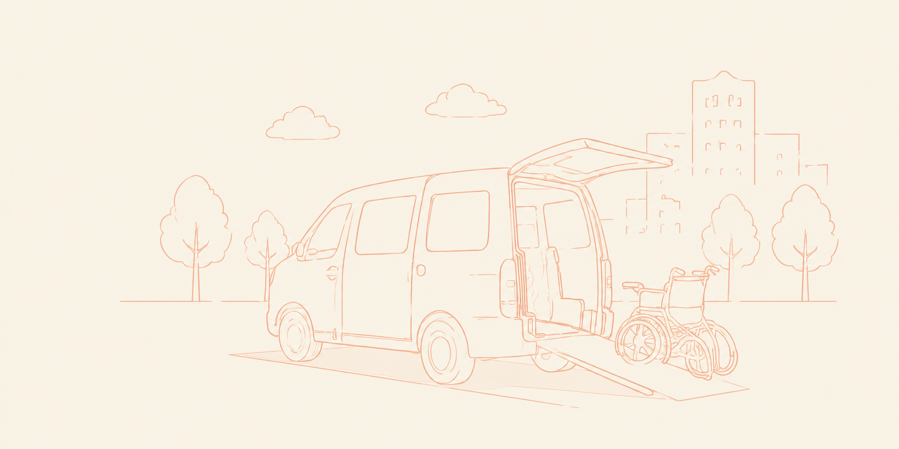

通院・退院付き添い
病院への送迎から受付、 お薬の受け取りまでサポートします。


Yourfit（ユアフィット）は、 通院やお買い物、お墓参り、 観光や付き添いなど、 お一人おひとりの目的に合わせた 外出支援サービスをご提供しています。
「ちょっと出かけたい」 「一人では不安」 そんな時もお気軽にご相談ください。
お問い合わせはこちら病院への送迎から受付、 お薬の受け取りまでサポートします。
日用品のお買い物を 安心して楽しめるようお手伝いします。
大切な一日も 安全に送迎いたします。
お墓掃除やお参りも サポートします。
久しぶりのお出かけも 楽しくサポート。
県外への送迎にも 対応しております。
お電話またはLINEより ご相談ください。
ご希望内容を お伺いします。
ご予約日時を 決定します。
スタッフが 丁寧に対応します。
はい。 車椅子に座ったまま ご乗車いただけます。
病院受付、 お買い物など 幅広く対応しております。
空き状況によりますので まずはご相談ください。
前日まで無料です。 当日は規定料金が発生します。
小さなお困りごとでも お気軽にお問い合わせください。